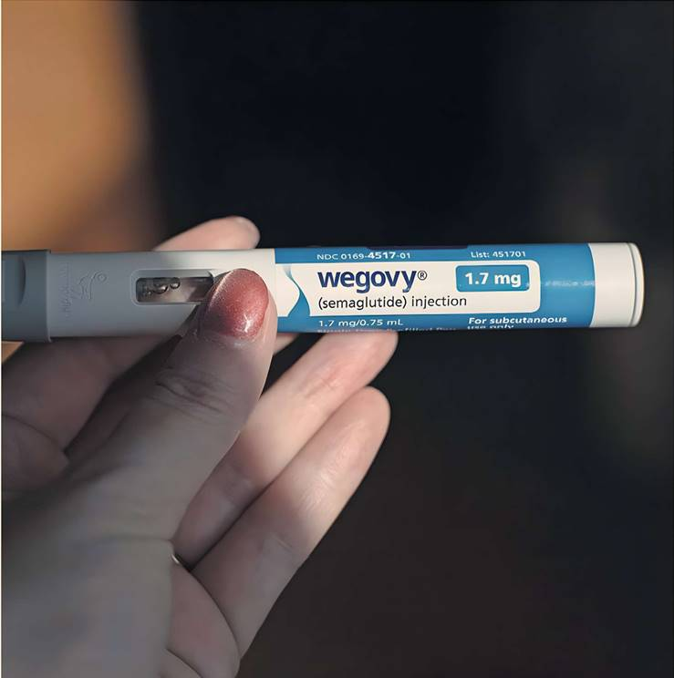
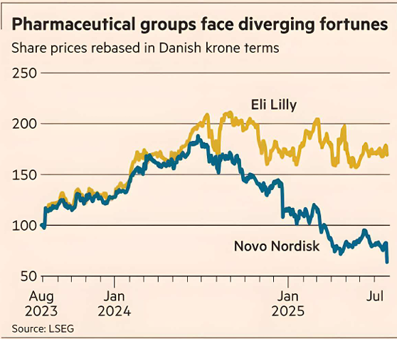

Until a year ago, Danish drugmaker Novo Nordisk was riding high. It had been first to market with an injectable diabetes treatment and the name Ozempic quickly became shorthand for a new class of blockbuster weight-loss drugs.
But competition started to catch up, a new drug trial disappointed, shares and growth fell, and its chief executive departed in May. Then on Tuesday a major profit warning knocked more than €60bn off its value. The company also announced that senior executive Maziar Mike Doustdar would become the new CEO.
Some in the industry say Novo’s core problem is quite simple: US rival Eli Lilly came up with a better product. Trials found more weight loss from Lilly’s Mounjaro and Zepbound than Ozempic and another Novo drug, Wegovy, and anecdotally doctors report fewer side effects.
“You can’t magically change the product profile,” said Gareth Powell, a healthcare fund manager at Polar Capital, an investor in both groups.
Ultimately, many shareholders and analysts now see this as Lilly’s market to lose. Tim Opler, a managing director in Stifel’s global healthcare group, said Lilly had worked at “double speed” to commercialise its drugs. “Lilly just outgunned Novo,” he said.
Doustdar argued on Tuesday that there were still big opportunities for Novo in the weight-loss market and that the company had the pipeline of drugs to capitalise on them.
“This is a market with more than 1bn patients and a huge unmet need,” he said. “I think we are very well positioned with our manufacturing capabilities, with our science, with our commercial activities and with brand recognition.”
The turmoil at Novo comes after some huge successes for the company — at its peak last June, its shares were up almost 300 per cent in three years as demand for weight-loss drugs soared.
But, ahead of this week’s profit warning, there had been worrying signs from US prescription data. Novo was the first to win US regulatory approval for its new diabetes and weight-loss treatments: Ozempic was approved for diabetes in 2017 and Wegovy for obesity in 2021.
But having had the lead in market share since then, prescription data from July showed Ozempic slipping below 50 per cent for the first time. According to research firm Iqvia, prescriptions for Lilly’s Mounjaro were at more than 622,000 a week, compared with 607,000 for Ozempic, while Zepbound had already overtaken Wegovy.
Emily Field, an analyst at Barclays, said Novo’s share price decline over the past year had been like a “slow-moving car crash” as it lost ground to Lilly, both in sales of existing obesity drugs and in drugs under development. Novo’s shares are now down 60 per cent in the past year, compared with a 6 per cent fall for Lilly.
Some say that previous CEO Lars Fruergaard Jorgensen has been unfairly blamed for not keeping the share price at what one person close to Novo called “ridiculous heights.”
“They’ve been an incredibly successful company. The previous CEO did amazing things. For all the criticism that the stock price has fallen, it had gone up a lot,” Powell said.
He added that the sheer number of obese and overweight people was a positive. “The market is still tiny in terms of penetration. So, you know, still in theory it is a huge... opportunity.”
For others, Novo made mis-steps before it had even launched the drugs, failing to prepare for demand. Then it did not change tack quickly enough in the US when it became clear people were happy to bypass insurance and pay for weight-loss drugs themselves.
Novo initially struggled to meet much higher than expected demand. Evan Seigerman, an analyst at BMO Capital Markets, said it based its sales forecasts partly on its earlier drug, Saxenda, which is not as effective for weight loss.
But the person close to Novo said that although with hindsight it was a huge market, “it would have been crazy to anticipate” the early surge in demand, and Novo had to be wary of producing a surplus that would go beyond its expiry date and so be unsellable. They added that Novo had since boosted production by acquiring factories from contract manufacturer Catalent.
However, some analysts say this early miscalculation has had a longer-lasting effect. When doctors and patients had trouble getting hold of Novo’s drugs, they switched to Lilly or to replicas that were widely available at the time, and did not switch back. Lilly also had some early supply problems but they were resolved more quickly.
At the same time, Novo launched in other markets while still trying to increase supply in the US. Seigerman said multi-country launches tended to be the company’s modus operandi. “They will supply and provide supply to their markets, even though that may be less profitable,” he said.
Then there was marketing. Novo seemed to struggle at first to make the transition from a business largely focused on selling insulin products — using research to convince clinicians — to the highly consumer and celebrity-centric market for weight-loss drugs.
“It was completely unknown territory,” another person close to the company said.
Field said people were “very sceptical” about Novo’s commercial strategy, compared with Lilly’s “much more aggressive” approach. “People think Novo was too complacent in its launch strategy, betting on the strength of the drug’s profile rather than being more proactive to get it in patient hands.”
Lilly recognised the different market dynamic more quickly, and launched LillyDirect at the start of 2024 to sell drugs directly to patients at cheaper prices. Novo did not follow suit until March this year, when it started a similar service called NovoCare. The Danish group has also signed an exclusive deal with US pharmacy benefit manager CVS Caremark, which recently made Wegovy its preferred obesity drug.
US-based Lilly may have made different decisions because of a “cultural advantage,” said Seigerman. “Lilly had the understanding to read the room... when it comes to the nuances of the United States and the evolving healthcare market,” he said.
Investors are already looking ahead to the next generation of obesity treatments, where they believe Lilly also has an upper hand.
Novo shares fell sharply in December on disappointing results for its new injectable weight-loss drug CagriSema. Analysts complained that the company had been overconfident in guiding on 25 per cent average weight loss, without warning that patients could control their own dose. Results showed that trial participants lost an average of 23 per cent of their body weight. For Wegovy, the average is 16 per cent and for Lilly’s Mounjaro, it is 21 per cent.
Powell said while investors had been critical of the miss on target weight loss, CagriSema could still have a “surprisingly good launch” if doctors see it as effective.
Nevertheless, he added that Novo needed to accelerate the development of its pipeline or make acquisitions. Most of the weight-loss drugs it has acquired are unlikely to come to market before the end of the decade.
He said it would need to move even faster if Lilly’s obesity pill orforglipron, which could be launched next year, had a good side-effect profile. “If that looks OK, I think it has the potential for a very fast launch. It could eat into the injectables market, which will be obviously an additional pressure point for Novo,” he said.
Novo has submitted an oral version of semaglutide, the active ingredient in Ozempic and Wegovy, to regulators. But Field worries that although it is a pill, patients will have to be careful about taking it: it cannot be taken with food, drink or other medicines.
Field added that Novo had made a “really big bet” on CagriSema, while Lilly had spread its bets more widely. While Lilly is Novo’s major threat for now, both companies face competition as other drugmakers, such as Roche and AstraZeneca, develop rival drugs.
One person close to Novo said there was a recognition that it needs to become more consumer-focused and show “enthusiasm” about finding the right strategy. “They are talking about, ‘how do we turn this big ship around?’”
This week’s profit warning and the market response reinforce the urgency of the task facing Doustdar. Asked about the ailing share price, he gave a blunt response. “My message is I don’t like it: I don't like it as an employee, I don't like it as a CEO elect — and I certainly don’t like it as a shareholder myself,” he said. “But setbacks don’t define companies. Our response does.”